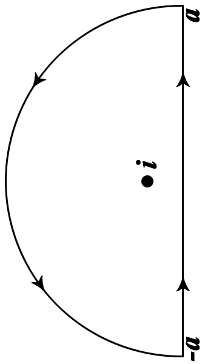

自動控制根本是一門集電類知識於一大成的科目。不過在進入自動控制之前，最好先訓練一下數學，不然就會像我現在一樣不小心趴在地上...
Pole & Zero
假設今天有一個函數長這樣：
$$G(s) = \frac {s} {(s+1)(s+2)}$$
依照高中數學的常識可以知道「嗯...這個function在\(s = -1\)跟\(s = -2\)的時候會爆掉，在\(s = 0\)的時候是\(0\)」
很好！這樣對 pole跟 zero就有基本的認知了！所謂pole就是 帶進去會爆掉(噴到無限)的點，而zero就是(跟微積分那個zero一樣)就是 帶進去會變成0的點。 (順帶一提，多項式的根也是叫zero。這樣就更好理解了吧～)
於是你就想「不對啊，這樣我幹嘛要來唸大學呢？」沒錯，聽起來很有道理。所謂pole與zero並不是單純的「帶進去會變無窮大」或「帶進去會變成0」這麼簡單。 pole其實是對複含數用Laurent Series展開時，所有會讓分母變成0的數字。除了這樣，pole還有不同的階數，比如說：
$$G(s) = \frac {s} {{(s+1)}^2}$$
這樣來說，他的Laurent Series就是：
$$G(s) = \frac {s} {{(s+1)}^2}$$
根本一樣嘛！沒錯，Laurent Series就是這麼簡單，如果不知道他是什麼，暫時把它當成除了有\((s+1)^0, (s+1)^1...(s+1)^n...\)這些項以外， 還出現\(\frac {1} {(s+1)}, \frac {1} {(s+1)^2}...\frac {1} {(s+1)^n}...\)的泰勒級數好了。回到正題，在這個Laurent Series中，帶進去會爆掉得項，只到-2次方而已， 所以這個pole就是2階的pole。
一個pole帶進去級數展開時，會爆掉的最高次項的次數，就稱為該pole的「階數」。
又比如：
$$G(z) = e ^ {\frac {1} {z}}$$
這個東西的Laurent Series是：
$$G(z) = (\frac {1}{z})(\frac {1}{1!}) + (\frac {1}{z})^{2}(\frac {1}{2!}) + (\frac {1}{z})^{3}(\frac {1}{3!}) + ...(\frac {1}{z})^{n}(\frac {1}{n!})...$$
(沒錯，就是把\(e^{x}\)的泰勒級數代\(\frac {1} {z}\)進去就生出來了)
因為\(\frac {1} {z}\)項會一直出現到無窮次項，所以0這個pole的階數就是無窮階。
那麼，階數對這個pole的重要性是什麼呢？這個在訊號方面有它的意義，pole越多，暫態波動越大（ 因為做Inverse Laplace的時候就會出現\(t^{n} e^{-at}\)，波動就比\(e^{-at}\)還大了嘛～)
。除此之外，在數學上階數會影響該點的留數(residue)，在複數平面的環路積分時，會有神招可以大幅簡化積分。
Laplace Transform
(給你3秒倒抽一口涼氣並默哀)
說到Laplace Trandform，當然就要照所有教科書的慣例，把他的定義洋洋灑灑的寫出來啊：
$$\mathcal{L} [f(t)] = \int_{0^{-}}^{\infty} f(t)e^{-st}dt$$
雖然我從來沒記得他過，不過我還是寫了他。不然這樣版面看起來太空了。雖然是這樣，不過這個transfom有一點小眉角：
1. \(\space f(t)\)要是 \(O(e^{x})\)：不然積起來就爆開了嘛～
2. 積分下限是\(0^{-}\)：這是為了強調初始條件必須考慮進去。
3. \(s\)是定義在複數平面上：一切的一切都在複數平面上發生。不過，不是所有區域他都收斂。舉例來說：
$$\mathcal{L} [e^{-ax}] = \int_{0^{-}}^{\infty} {e^{-at}}e^{-st}dt = \int_{0^{-}}^{\infty} e^{-(a + s)t}dt$$
如果希望這個積分收斂，很明顯的，\(s + a\)的實部要大於0，不然指數函數積分到無窮就會爆給你看。所以收斂的條件就是：
$$Re(s + a) > 0$$
也就是：
$$ Re(s) > Re(-a)$$
也就是\(s\)要在\(-a\)右邊的區域他才會收斂。所以這個區域就叫做收斂區域(Region of Convergence)
Inverse Laplace Transform
(給你3秒倒抽一口涼氣並默哀)
照慣例就是要把他的定義洋洋灑灑的寫出來嘛:
$$\mathcal{L}^{-1} [F(s)] = \frac {1} {2 \pi j}\int_{C-jw}^{C+jw}F(s)e^{st}ds$$
其中
$$C要是個比最右邊的Pole還右邊$$
因為複數平面有Coutour Deformation Theorem，所以只要有包到該包到的pole，\(C\)是什麼並不重要，反正包住的pole一樣，積出來的結果就一樣。
你可你會想「尛？這麼醜的東西我要怎麼用？」問得好！正是因為她很醜，所以簡化他的理論非常重要，那就是傳說中的留數定律(Residue Theorem)！
Residue Theorem
再看一眼剛剛溫馨的Inverse Laplace Transform積分：
$$\mathcal{L}^{-1} [F(s)] = \frac {1} {2 \pi j}\int_{C-jw}^{C+jw}F(s)e^{st}ds$$
Contour Deformation Theorem說：「只要包住的pole一樣，積分結果就一樣。
不過，Contour Deformation Theorem並沒有說算出來到底是多少，你只知道值會一樣，但不知道確切會是多少。他也只說「一樣」然後就拍拍屁股走人了。這時候Residue Theorem霸氣地走了過來說：
.
.
.
.
.
「少年仔，你還不知道留數(Resdiue)是什麼，練個十年再來找我吧～啾咪～」
.
.
.
.
.
.
.
「不過等十年就表示我要把你自控當掉十次，這樣有點累。所以我決定叫你花十分鐘看完下面的東西就好。」
Residue...前的開胃菜
留數(residue)是什麼？這個要從一個老掉牙的微積分問題開始說：
請積分以下的函數：
$$\int \frac {1} {(s + 2)(s + 3)(s + 77)^{2}}ds$$
這個老掉牙的問題微積分都做過。最經典的方法就是使用部分分式(partial fraction)，假設他是這樣：
$$ \frac {1} {(s + 2)(s + 3)(s + 77)^{2}} = \frac {A} {(s + 2)} + \frac {B} {(s + 3)} + \frac {C} {(s + 77)^2} + \frac {D} {(s + 77)} $$
然後暴力通分求出A, B, C。
不過你看到我打出這一行，就表示我一點也沒有想要算他的意思。看那精美的數字...幸好，除了通分與考轉學考以外，這裡有其他的辦法。不過要做一點小小的觀察，比如把兩邊同乘\((s + 2)\)：
$$\frac {(s + 2)} {(s + 2)(s + 3)(s + 77)^{2}} = A \frac {(s + 2)} {(s + 2)} + B \frac {(s + 2)} {(s + 3)} + C \frac {(s + 2)} {(s + 77)^2} + D \frac {(s + 2)} {(s + 77)}$$
然後你就發現好像彷彿似乎貌似曾幾何時你可以看成：
$$\frac {1} {(s + 3)(s + 77)^{2}} = A + B \frac {(s + 2)} {(s + 3)} + C \frac {(s + 2)} {(s + 77)^2} + D \frac {(s + 2)} {(s + 77)}$$
如果再把-2帶進去的話，就會不小心發現：
$$\frac {1} {(-2 + 3)(-2 + 77)^{2}} = A + B \frac {(0)} {(s + 3)} + C \frac {(0)} {(s + 77)^2} + D \frac {(0)} {(s + 77)}$$
然後就發現有一大坨東西都變成0：
$$\frac {1} {(-2 + 3)(-2 + 77)^{2}} = A $$
於是你不禁大喊「Jack！這真是太神奇啦！」於是你很開心的用同樣的做法對\((s + 3) \)做一遍。這次你很偷懶，連完整算式都不寫：
1. 左右同乘\((s + 3)\)，所以你把左式的\((s + 3)\)遮住消掉，得到\(\frac {1}{(s + 2)(s + 77)^{2}}\)。這時你知道 右邊除了B以外，A, C, D都會有一個消不掉的\((s + 3)\)，而B那一項剛好會分子分母相消而留下B。
2. 接著你知道要故意帶-3，這樣一來右邊的除了B以外，其他項都因為有消不掉的\((s + 3)\)，所以通通都會變成0。
3. 所以，你就會得到\(\frac {1}{(-3 + 2)(-3 + 77)^{2}} = B\)
於是你又喊了一聲「Jack！這真是太神奇啦！」
接下來，你又看到了\((s + 77)^2\)。這個看起來醜一點，不過你覺得應該可以Hold住。所以你又做了一模一樣的事：
1. 左右同乘\((s + 77)^2\)，所以你把左式的\((s + 77)^2\)遮住消掉，得到\(\frac {1}{(s + 2)(s + 3)}\)。這時你知道 右邊除了C以外，A, B, D都會有一個消不掉的\((s + 77)^2\)，而C那一項剛好會分子分母相消而留下C。
2. 接著你知道要故意帶-77，這樣一來右邊的除了C以外，其他項都因為有消不掉的\((s + 77)^2\)，所以通通都會變成0。
3. 所以，你就會得到\(\frac {1}{(-77 + 2)(-77 + 3)} = C\)
於是你再度喊了一聲「Jack！這真是太神奇啦！」
對啊，連我都在複製貼上了。就知道這有多神奇。終於，剩下最後一項\(\frac {D}{(s + 77)}\)了！於是你做了同樣的事，把左右同乘\((s + 77)\)：
$$\frac {(s + 77)} {(s + 2)(s + 3)(s + 77)^{2}} = A \frac {(s + 77)} {(s + 2)} + B \frac {(s + 77)} {(s + 3)} + C \frac {(s + 77)} {(s + 77)^2} + D \frac {(s + 77)} {(s + 77)}$$
稍微化簡一下，然後你發現：
$$\frac {1} {(s + 2)(s + 3)(s + 77)} = A \frac {(s + 77)} {(s + 2)} + B \frac {(s + 77)} {(s + 3)} + C \frac {1} {(s + 77)} + D$$
然後你就發現這時候
帶-77進去就爆惹！
帶-77進去就爆惹！
帶-77進去就爆惹！
終於，這個超方便的方法要在這裡吃屎惹～這表示我們一點辦法都沒有了嗎？當然不是。試試看乘以\((s + 77)^2\)而不是\((s + 77)\)，不然分母有東西沒消完真的是很難看：
$$ \frac {1}{(s + 2)(s + 3)} = A \frac {(s + 77)^2} {(s + 2)} + B \frac {(s + 77)^2} {(s + 3)} + C \frac {(s + 77)^{2}} {(s + 77)^{2}} + D \frac {(s + 77)^2} {(s + 77)}$$
然後稍微清一下，就發現：
$$ (\frac {1}{(s + 2)(s + 3)}) = A \frac {(s + 77)^2} {(s + 2)} + B \frac {(s + 77)^2} {(s + 3)} + C + D (s + 77)$$
因為右邊那個常數C實在是很礙眼，如果可以把它消掉應該是很不錯的事。消常數？好像有什麼東西可以做到這件事...
沒錯！就是微分！
$$(\frac {1}{(s + 2)(s + 3)})' = (A \frac {(s + 77)^2} {(s + 2)})' + (B \frac {(s + 77)^2} {(s + 3)})' + (C)' + D (s + 77)'$$
然後稍微整理一下：常數C就這樣被消掉了。更棒的是，最右邊的\(D(s + 77)\)為分之後還出現了意想不到的好處...
$$(\frac {1}{(s + 2)(s + 3)})' = A (\frac {(s + 77)^2} {(s + 2)})' + B (\frac {(s + 77)^2} {(s + 3)})' + 0 + D$$
沒錯！微分之後，不只C被消掉，連D都自動浮出來了！這樣再把-77帶進去。因為A, B相關的項，各自都有\((s + 77)^2\)，所以Chain Rule之後的各項都會至少留一個\((s + 77)\)，帶進去之後通通變成0：
$$(\frac {1}{(s + 2)(s + 3)})'\bigg |_{s = -77} = 0 + 0 + 0 + D$$
這樣就算分母次方很多，那也知道怎麼處理了。比如說：
$$\frac {1} {(s + 2)(s + 77) ^ {100}}$$
那麼可以拆成：
$$F(s) = \frac {1} {(s + 2)(s + 7)(s + 77)^{100}} = \frac {A}{s + 2} + \frac {B}{s + 7} + \frac {C_{100}} {(s + 77)^{100}} + ... \frac {C_{2}} {(s + 77)^2} + \frac {C_{1}} {(s + 77)^1}$$
所以\(C_{100}\)就是： \(\frac {1} {(s + 2)(s + 7)}\bigg | _{s = -77} = (s + 77)^{100} F(s)\)
\(C_{99}\)就是： \(\frac{d}{ds} \frac {1} {(s + 2)(s + 7)}\bigg | _{s = -77} \frac{1}{1!}= \frac{d}{ds}[(s + 77)^{100} F(s)]\frac{1}{1!}\)
\(C_{98}\)開始不太一樣，因為\((s + 77)^2\)為分兩次會掉出2!，所以要除回去：
\(C_{98}就是：\frac{d^2}{ds^2}\frac {1} {(s + 2)(s + 7)}\bigg | _{s = -77}\frac{2}{2!}= \frac {d^2}{ds^2}[(s + 77)^{100} F(s)]\frac{2}{2!}\)
\(C_{97}\)就是： \(\frac{d^3}{ds^3}\frac {1} {(s + 2)(s + 7)}\bigg | _{s = -77}\frac{3}{3!}= \frac{d^3}{ds^3}[(s + 77)^{100} F(s)]\frac{3}{3!}\)
.
\(C_{n}\)就是： \(\frac{d^{(100 - n)}}{ds^{(100 - n)}}\frac {1} {(s + 2)(s + 7)}\bigg | _{s = -77} \frac{1}{(100 - n)!}= \frac{d^{(100 - n)}}{ds^{(100 - n)}}[(s + 77)^{100} F(s)]\frac{1}{(100 - n)!}\)
.
\(C_{1}\)就是： \(\frac{d^{(100 - 1)}}{ds^{(100 - 1)}}\frac {1} {(s + 2)(s + 7)}\bigg | _{s = -77} \frac{1}{(100 - 1)!}= \frac{d^{(100 - 1)}}{ds^{(100 - 1)}}[(s + 77)^{100} F(s)]\frac{1}{(100 - 1)!}\)
好了，終於算完一個老掉牙的問題了。那為什麼要算他呢？事情是這樣的，如果你仔細看一下Laurent Series：
$$f(s) = ...A_{n}(s - a)^{n} + ...A_{0}(s - a)^0 + \frac {A_{-1}} {(s - a)} + \frac {A_{-2}} {(s - a)^2} + ...\frac {A_{-n}}{(s - a)^{n}} + ...$$
有沒有發現，後面次數為負的那幾項，跟剛剛的partial fraction 有87%像啊！那「留數」又跟這個東西又有什麼關係呢？
「留數」就是Laurent Series中\(\frac {A_{-1}} {(s - a)}\)項的係數\({A_{-1}}\)啊！
Residue
終於可以給留數一個定義：
F(s) 的一個pole, a, 的「留數」就是對a展開的Laurent Series中\(\frac {A_{-1}} {(s - a)}\)項的係數\({A_{-1}}\)
不過，剛剛也看到，Laurent Series跟部分分式有87%像，所以你也可以很通俗的說：
F(s) 一個 pole, a, 的「留數」就是對a做部分分式，然後看裡面\(\frac {A_{-1}} {(s - a)}\)項的係數\({A_{-1}}\)是多少。 F(s) 一個 pole, a, 的「階數」就是問部分分式可以拆幾項？
不過，想也知道如果分母是n次方，微積分都教我們要拆n項，所以階數根本就是他在分母的「次數」。
好，我們好不容易知道「留數」是什麼，那這傢伙要怎麼求呢？這東西會跟這個Pole的階數有關。把剛剛例子通通拿來看：
$$ F_{1}(s) = \frac {1} {(s + 2)(s + 3)(s + 77)^{2}} = \frac {A} {(s + 2)} + \frac {B} {(s + 3)} + \frac {C} {(s + 77)^2} + \frac {D} {(s + 77)} $$
偷看一下剛剛的定義：
F(s) 的一個pole, a, 的「留數」就是對a展開的Laurent Series中\(\frac {A_{-1}} {(s - a)}\)項的係數\({A_{-1}}\)
所以很明顯，-2的留數是A、-3的留數是B。至於要怎麼求？剛剛就秒殺過了。那-77的留數呢？是D！這裡再多做一點觀察：-2與-3都是一階的pole，而求得的方法不用微分; -77是二階的pole，求的時候要微分一次。 好像開始發現一些規律了。
接下來是剛剛的第二個例子：
$$F(s) = \frac {1} {(s + 2)(s + 7)(s + 77)^{100}} = \frac {A}{s + 2} + \frac {B}{s + 7} + \frac {C_{100}} {(s + 77)^{100}} + ... \frac {C_{2}} {(s + 77)^2} + \frac {C_{1}} {(s + 77)^1}$$
-2跟-7的留數都可以用剛剛觀察法看出來。對於-77，剛剛可以看到：
\(C_{1}\)就是： \(\frac{d^{(100 - 1)}}{ds^{(100 - 1)}}\frac {1} {(s + 2)(s + 7)}\bigg | _{s = -77} = \frac{d^{(100 - 1)}}{ds^{(100 - 1)}}(s + 77)^{100} F(s)\)
-77是個100階的pole，所以在求\(\frac {C_{1}} {(s + 77)}\)項的係數時微分了99次。這個歸納很合理，因為階數可以看成「\((s - a)\)在分母的次數」，所以你一定會左右同乘相同多次數的\((s - a)\)。 但是因為\(\frac {C_{1}} {(s + 77)}\)分母已經有一個，所以剛好抵消，只要微(pole階數 - 1)次就可以讓係數浮出來。但是微幾次就要把多出來的階乘除掉。總和以上，可以得到：
F(s) 的一個 k 階 pole, a , 的「留數」可以這樣求出來：
$$\frac{\frac{d^{k - 1}}{ds^{k - 1}} (s - a)^{k}F(s)}{(k - 1)!} \bigg |_{s = a}$$
當好不容易把「留數」搞定之後，就可以去看看Residue Theorem做了些什麼！
Residue Theorem(真的)
這個定理到底神奇在什麼地方呢？還記得剛剛Contour Deformation Theorem說過「只要包住的Pole數目一樣，環路積分的值就一樣」對吧？但是他只說了「積分值一樣」，沒有說「積分值是多少」。 這時候，霸氣的residue Theorem走了過來：
.
.
.
.
.
「你把包住的留數通通加起來再乘上\(2 \pi j\)，積分值就出來了啊～～」
.
.
.
.
.
.
.
這次是真的沒了。
蛤？這個定理好像有點短？不過他真的就是這個樣子。不信你自己開O'Neil的工程數學看。
等等，到這裡是不是少了什麼？沒錯！就是我們親愛的Inverse Laplace Transform
Inverse Laplace Trandform
我們再多看Inverse Laplace Transform的原始定義：
$$\mathcal{L}^{-1} [F(s)] = \frac {1} {2 \pi j}\int_{C-jw}^{C+jw}F(s)e^{st}ds$$
可以注意到這個是個再複平面上的積分。我們想用Resdiue Theorem，但是Residue Theorem必須要在封閉曲線積分才能使用。 不過，我們可以先用一個過C點的左半圓，像這樣：
然後把這個半圓的半徑趨近無窮，然後看到這個積分長怎樣：
$$\lim_{a \to \infty} \frac {1} {2 \pi j} \oint_{半圓} F(s)e^{st}ds = 直徑部分積分 + 半圓部分積分$$
分別把這兩部分寫出來，也就是：
$$\lim_{a \to \infty} \frac {1} {2 \pi j}\int_{C-a}^{C+a}F(s)e^{st}ds + \lim_{a \to \infty}\frac {1} {2 \pi j}(半圓路徑積分)$$
這樣看起來，左邊跟那一項跟我們要的無窮積分有87％像啊！但是還了差一點點，後面的「半圓部分積分」不知道是什麼，怎麼辦？這裡有一個好消息： 大部分的情況下， 「半圓路徑積分會是0。這樣就把無窮積分變成環路積分的極限了，也就是：
$$\mathcal{L}^{-1} [F(s)] = \frac {1} {2 \pi j}\int_{C-jw}^{C+jw}F(s)e^{st}ds = \lim_{a \to \infty} \frac {1} {2 \pi j} \oint_{半圓} F(s)e^{st}ds$$
既然這是個環路積分，接下來就是使用Residue Theorem使用的時機了。回顧一下我們真的要求的那個積分：
$$\lim_{a \to \infty} \frac {1} {2 \pi j} \oint_{半圓} F(s)e^{st}ds$$
那麼只要把所有的留數求出來，然後再加起來乘上\(2 \pi j\)就可以了。不過你發現Inverse Laplace Transform的分母已經有個\(2 \pi j\)了，所以更簡單：所有留數加起來就好。
現在舉個例子：假設你有一個函數長這樣：
$$F(s) = \frac {1} {(s + 2)(s + 3)(s + 77)^{2}}$$
然後你要算他的Inverse Laplace Transform。所以你看了看上面，然後你想：「我要找出\(F(s)e^{st}\)所有的pole，然後找出全部的Residue，然後加起來...」
所以你就找了第一個pole，也就是-2。
1. 左右同乘\((s + 2)\)，所以你把左式的\((s + 2)\)遮住消掉，得到\(\frac {e^{st}} {(s + 3)(s + 77)}\)。
2. 接著你知道要故意帶-2。
3. 所以，你就會得到\(\frac {e^{-2t}} {(-2 + 3)(-2 + 77)}\)